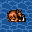
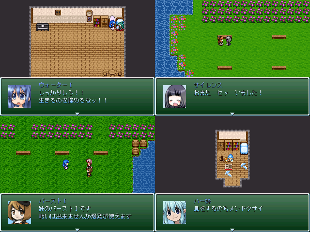

 |
|
 |
|
| 作者：しらゆき | |
| ジャンル：たぶんだいたい見るゲ | |
| ツクール：2000 | |
| 作者コメント： 現状：スクショ分しか出来てない ・ksgを詰め合わせる予定です、目標１個！ ・これから作るのでスクショの内容から変わっていく可能性があります。 ・過去作の続きとかそういうのをやるかもしれません。 |
|
| 管理人コメント： 詰め合わせというからにはせめて2個を目標に！ |
|
| ダウンロード(0.00MB) / 感想掲示板 |
|
| 前の作品 / 次の作品 / TOPへ戻る | |